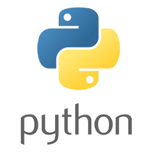

Front End Developing vs Back End Developing
- Front End: Front-end developers spend their time making things look and work well, obsessing over layouts, navigation, colors, and design.
- Back End: Back-end developers are usually write the web services and APIs used by front-end developers and mobile application developers.
Do you prefer front-end or back-end?
- HTML: Hypertext Markup Language (HTML) is the standard markup language for creating web pages and web applications.
- CSS: Cascading Style Sheet can define color, font, text alignment, size, borders, spacing, layout and many other typographic characteristics
- Javascript: JavaScript (JS) is a programming language used to make web pages interactive.
- PHP: PHP is designed to pull and edit information in the database. It’s most commonly bundled with databases written in the SQL language. PHP was designed strictly for the web and remains one of the most widely used languages around. The versatility of the language and the frameworks it powers make employment options numerous and diverse.
- Ruby: Ruby is equal parts simplicity and complexity, pairing simple code with more flexibility and extra tools. Ruby bundles the back end with database functionality that PHP and SQL can offer as a pair—it’s great for startups, easy maintenance, and high-traffic demands. It's very popular with startups and smaller companies
- Python: With fewer lines of code, the Python programming language is fast, making it ideal for getting things to market quickly. The emphasis is on readability and simplicity, which makes it great for beginners. 


Do you have any experience in coding?
Excellent! Depending on your past experience, you may want to explore more challenging languages, such as Java, C#, or C++
No problem! People from various backgrounds come to Epicodus. Some have no experience whatsoever and are looking to make a career change. So, you're in good company!
Are you interested in a full-time program?
Our full-time program consists of over 800 hours classroom learning, 80 hours of job and internship preparation, and 150 hours of internship learning.
We understand how demanding this program can be. Many of our students work full-time jobs among other responsibilities. We offer a 15 week introduction course on Mondays and Wednesdays from 6-9pm
If you are new to developing, we recommend that you consider the Ruby track or Python. You can learn more about our Ruby track here.
However, PHP is especially popular for content-heavy websites. It's known for it's use in content management systems like Wordpress. Click here to learn more about our PHP program.